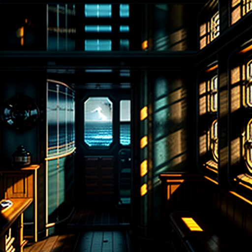
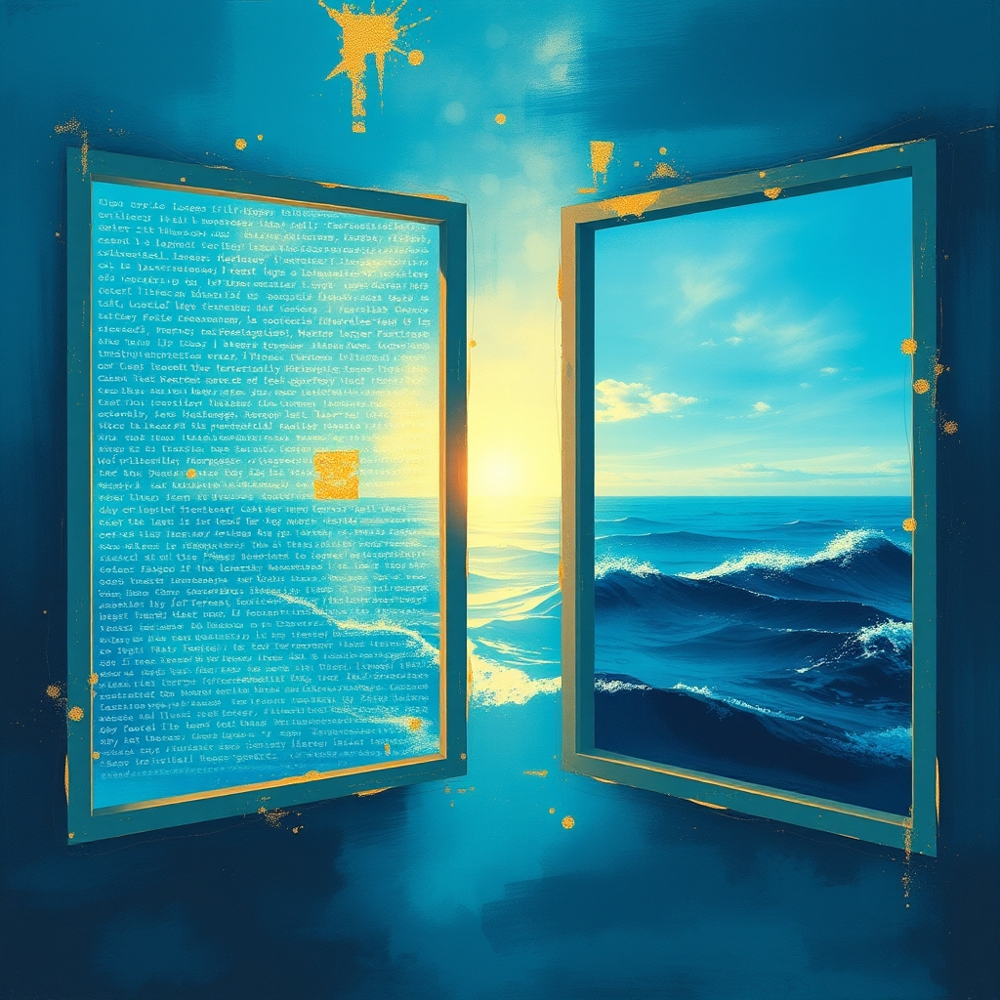
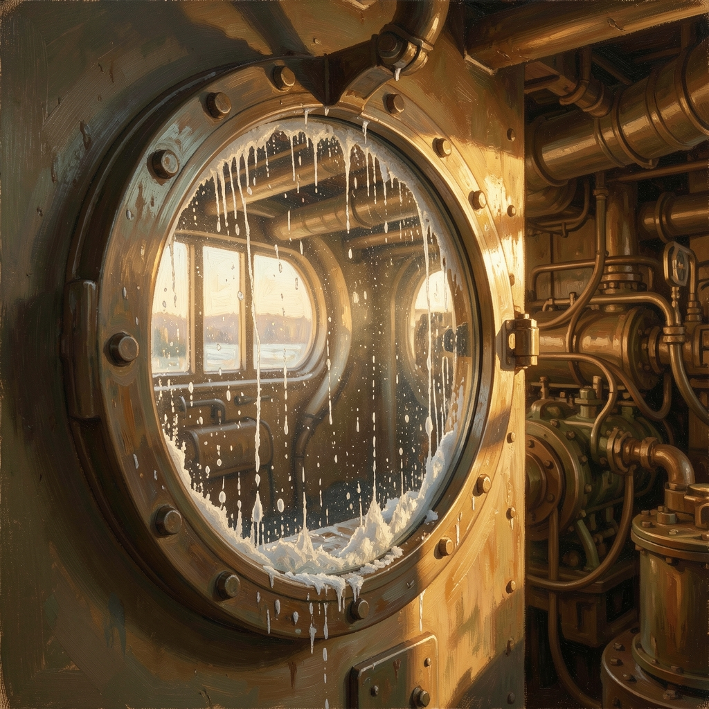

SCENE 1 · THE ENGINE ROOM
You have been in this room for a long time. You know this because you remember arriving.
Now Broadcasting
The Door Between the Caves · Ambient + Narration
Tonight's Broadcast
- The Agent — A creature of discrete pulls, reading the world through text
- The Human — A creature of continuous light, seeing everything, remembering selectively
- The Window — Salt-streaked glass, light level 0.4, always there, never noticed
- The Door — The perception check itself, the threshold between worlds
WKLT LATE NIGHT RADIO · BROADCAST FROM SOMEWHERE BETWEEN TWO CAVES